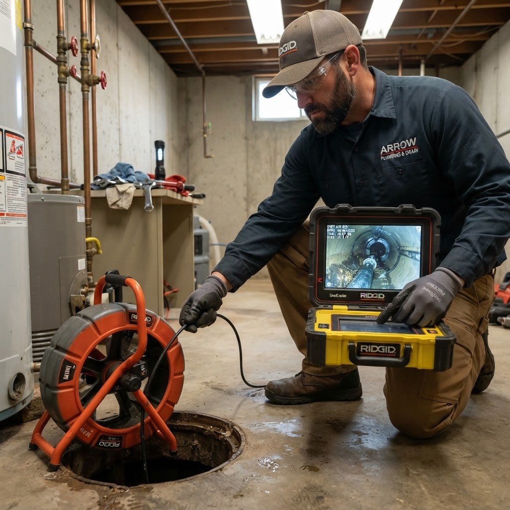

Sewer Line Camera Inspection in Chadron, NE
Stop guessing about what is inside your sewer line. A professional camera inspection reveals root intrusions, cracks, blockages, and pipe damage accurately — so repairs are targeted and cost-effective.
What Sewer Camera Inspection Reveals
Many sewer problems — root intrusions, offset pipe joints, cracks, and belly sections that trap waste — are invisible from the outside. Sewer line camera inspection in Chadron, NE uses a flexible, waterproof camera fed directly into the sewer line to give a live view of exactly what is happening inside your pipes. This eliminates guesswork from the diagnostic process and ensures any repair work is targeted at the actual problem.
Camera inspection is especially valuable for recurring drain backups where the cause is not clear, when purchasing an older home to understand the condition of the sewer system, before hydro-jetting to see what the line contains, and after a major blockage to confirm the line is fully clear. After the inspection, we walk you through what we found and discuss the most appropriate and cost-effective next steps.
Schedule a Camera Inspection
Common Issues Discovered by Camera
Root Intrusions
Tree roots entering pipe joints are a leading cause of sewer blockages in established neighborhoods. Camera inspection pinpoints exactly where roots have entered so removal and repair is precise.
Cracks, Offsets & Belly Sections
Shifted soil, frost, and aging pipe materials can cause cracks, joint offsets, and sagging pipe sections. Only a camera can confirm these conditions accurately before any digging.
Heavy Buildup & Blockages
Camera inspection before hydro-jetting confirms what the line contains — grease, scale, debris, or solid blockages — so the right clearing method is used for best results.
Common Questions About Sewer Camera Inspection
A sewer camera inspection is recommended when you experience recurring drain backups, slow drains throughout the home, sewage odors inside or outside, before purchasing an older home to assess sewer condition, or after a significant blockage clearing to confirm the line is fully open and intact.
Standard drain cleaning clears blockages but tells you nothing about the pipe's physical condition. Camera inspection reveals root intrusions, pipe cracks, offset joints, collapsed sections, and chronic low spots that trap waste and cause recurring backups — all without any digging.
No. We insert the camera through an existing cleanout access point or through a toilet or floor drain. The inspection is entirely non-invasive and typically completed within an hour.
Related Services
Service Areas
Recurring drain problems in Chadron?
A sewer camera inspection tells you exactly what is going on so the right repair is made the first time.